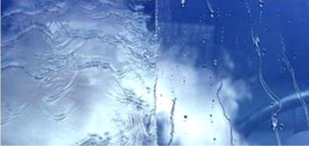
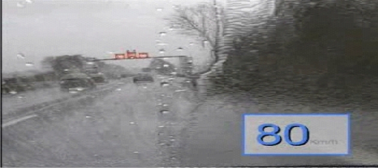
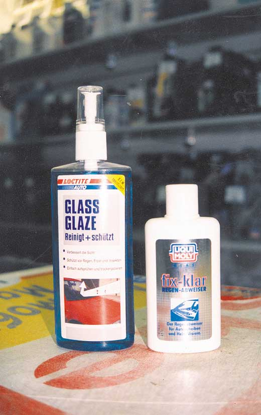

На самом деле это средство, химический состав которого до сих пор хранится в тайне, разрабатывалось сотрудниками NASA, задача которых была заключена в том, чтобы повысить безопасность авиа перелётов. Полное название данного средства позволяет примерно разобраться, что такое антидождь и звучит, как «полироль для ветровых стёкол».
Данная полироль, производимая на основе изопропилового спирта, представляет собой водоотталкивающее покрытие, наносимое на ветровое стекло автомобиля или катера. Попадая на поверхность, которая не может быть подвержена смачиванию, вода собирает в крупные капли, сдуваемые встречным ветром при движении вперёд. Таким образом, средство, называемое «Антидождь», оказывается более эффективным, чем обычные «дворники», устанавливаемые штатно на машину.
Впрочем, это не единственное положительное качество рассматриваемого средства. Прежде всего, хочется отметить повышение безопасности передвижения на автомобиле, ветровое стекло которого обработано данной полиролью. Дело в том, что при нанесении средства происходит заполнение им мелких царапин или потёртостей, имеющихся на стекле. Это позволяет существенно улучшить видимость и практически избавиться от отблесков света и искажений, затрудняющих контроль ситуаций – проще говоря, ничего не мешает глазам водителя видеть то, что находится впереди.
К тому же, улучшается и внешний вид автомобиля, ведь со стороны стекло, обработанное полиролью, выглядит влажным и имеет характерный отблеск, отражающий солнечные лучи. Выгодна данная продукция и тем, что практически отсутствует возможность её подделки – слишком уж сложна конструкция пульверизатора и флакона, в общем.
Как и любой препарат, «Анти-дождь» дает только тот эффект, на который он рассчитан. И остановившись на перекрестке, не удивляйтесь, если вдруг вам придется включить на пару взмахов «дворники» (для полного удаления воды необходим еще и поток воздуха). Средство начинает действовать на скорости примерно 35 км/час, а полный эффект достигается при 50 км/час и выше. Препарат не удаляет грязь и пыль, если машина стоит длительное время на улице. Поэтому чтобы не было разочарований, перед покупкой проконсультируйтесь у грамотных продавцов. в солидных магазинах вам дадут исчерпывающую информацию о том или ином препарате. Если его характеристики вас устраивают, покупайте!
Наномойка Антидождь Инновационный автошампунь Полировка «Жидкое стекло»